Bảo vệ riêng tư quỹ đạo
Dữ liệu, phương pháp và kết quả thực nghiệm
Bản 26/09/2026 · Cập nhật thực nghiệm 24/09/2026
PDF · LaTeX · 30 mẫu dữ liệu · Nguồn
1. Khung cập nhật và dữ liệu nền
Bản ngày 26/09/2026, cập nhật đến 24/09. Phạm vi S1–S10; kết quả hiện tại tập trung dịch vụ POI khả dụng và năm scenario ưu tiên. Điểm tổng Q vẫn là ví dụ minh họa, chưa phải kết quả xếp hạng model.
Thứ tự triển khai: S1, S2, S3, S9, S10 → S5, S6, S8 → S4, S7.
Ba cấp dữ liệu: nhóm tuyến → chuyến → bản ghi
Nhóm tuyến: tuyến gốc và các biến thể có quan hệ như rẽ khác, nhập tuyến, dừng hoặc lặp chuyến. Bộ minh họa có 12 nhóm trên cùng mạng đường; đây không phải 12 loại tấn công.
Chuyến: mỗi nhóm có 22 chuyến hoàn tất qua chín ngày mô phỏng, tổng 264. Bản ghi: chọn chuyến/cửa sổ, thông tin phụ trợ và đáp án để tạo phép thử. Bộ minh họa có 393 record, 172.443 điểm FCD và đủ 30 ca A/B/C.
Một chuyến có thể tạo nhiều phép thử; 393 bản ghi không phải 393 chuyến độc lập.
| Bộ dữ liệu trong báo cáo | Quy mô và vai trò |
|---|---|
| Minh họa kịch bản và bản đồ | urban_fresh_v2: 12 nhóm, 264 chuyến, 393 record. Dùng cho 30 sample A/B/C và atlas ở phần đầu. |
| Thực nghiệm hiện tại | research_loop_expanded_v1: 12 nhóm mới, 264 chuyến, 415 record. Năm scenario ưu tiên lấy 173 record từ 102 chuyến; mạng OSM khôi phục khác nguồn lịch sử. |
Hai bộ dùng cùng đặc tả nhưng khác mẫu nguồn/mạng. Số 393 không phải mẫu số của bảng thực nghiệm mới; các chuỗi trạng thái POI chỉ là replay trên cùng chuyến.
Quyền nhìn thấy dữ liệu
| Phía giữ dữ liệu | Nội dung được sử dụng |
|---|---|
| Thiết bị | GPS hiện tại và lịch sử đã có; cơ chế không nhận đích/tương lai hoặc nhãn đánh giá. |
| Bộ đánh giá | Toàn bộ FCD và đáp án để chấm; không truyền các nhãn này cho cơ chế hoặc đối thủ. |
| Đối thủ | Transcript đã bảo vệ và phụ trợ được phép; không nhận nhãn, kế hoạch tuyến hay record_id. |
Các sample là dữ liệu đánh giá trước bảo vệ. Tra nguồn ở data_samples.json và số đếm ở scenario_inventory.csv; đồng hồ chuẩn hóa theo cửa sổ, riêng S8 dùng mốc chung cho cặp.
Cách đọc 30 mẫu: A/B/C là ba điều kiện của cùng nhiệm vụ, không phải mức khó tăng dần. Số sau “/” là số bản ghi. Mỗi ca có map và trục thời gian; phóng to ở sample_maps.html, tra tọa độ trong data_samples.json.
Đọc bản đồ: chấm màu = mẫu được phép trước bảo vệ (nhiều mẫu có thể chồng nhau); trục thời gian = các lần lấy mẫu riêng; nét đứt = toàn chuyến chỉ để đánh giá; sao đỏ = nhãn vị trí. Màu phân biệt phiên, không phải danh tính. Nền SUMO benchmark cùng checksum OSM nhưng chưa xác minh trùng hình học mạng dataset vì thiếu file mạng gốc. © OpenStreetMap contributors.
Giới hạn cần giữ khi đánh giá: S9/S10 là điểm đầu/cuối, chưa phải nhãn nhà/nơi làm việc; truy vấn bị mất vẫn thuộc mẫu số utility. S5/S6 cần đối thủ nền chỉ dùng bản đồ/tần suất. S8 dùng thời gian chung cho cặp. S4 cần bổ sung nhãn xe; S7 dùng ý định tổng hợp, chưa đại diện hành vi người thật.
2. Dataset theo kịch bản: đặc tả đi cùng mẫu trên bản đồ
S1 — suy ra vị trí tại một lần gửi
Rủi ro chung: Một lần gửi vẫn có thể lộ vị trí: đối thủ dùng bản đồ/POI để loại các điểm công bố khó hợp lý. Câu hỏi là ‘đang ở đâu?’, chưa cần chuỗi thời gian. Hình chỉ cho đáp án thật, chưa biểu diễn suy luận đã thành công.
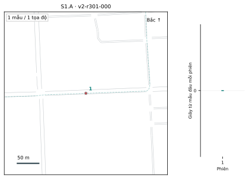
S1.A / 12 bản ghi. Một bản tin tại cạnh có ≥2 hướng đi tiếp hợp lệ: kiểm tra khi mạng đường còn nhiều khả năng.
u301_00: 1 mẫu
Đọc sample. Một lần lấy mẫu ở cạnh có 4 hướng đi tiếp. Sao đỏ trùng vị trí đầu vào; đối thủ phải chọn vị trí từ đầu ra đã bảo vệ, không được thấy sẵn sao này.
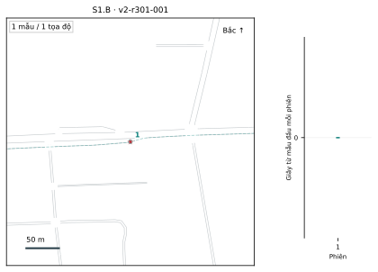
S1.B / 12 bản ghi. Một bản tin tại cạnh chỉ có 1 hướng đi tiếp: bản đồ tự loại bớt khả năng.
u301_00: 1 mẫu
Đọc sample. Vẫn chỉ một lần lấy mẫu, nhưng cạnh chỉ có một hướng đi tiếp. Bản đồ có thể loại bớt khả năng so với A; cần đo lợi thế này bằng đối thủ thực tế.
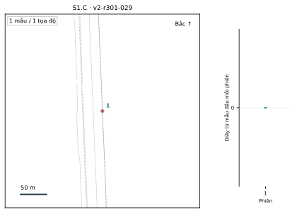
S1.C / 12 bản ghi. Cách POI ≤150 m; loại POI chiếm ≤5% danh mục công khai. Hiếm theo loại địa điểm, không phải theo tần suất ghé thăm.
u301_13: 1 mẫu
Đọc sample. Điểm lấy mẫu cách POI pharmacy 12,03 m; loại này chiếm 3,11% danh mục. Ngữ cảnh địa điểm hiếm là dấu hiệu bổ sung, không phải chuỗi di chuyển.
S2 — suy ra nơi dừng qua nhiều lần gửi
Rủi ro chung: Khác S1, đối thủ ghép nhiều lần gửi của cùng phiên để khoanh điểm dừng. Các chấm trùng vị trí không có nghĩa chỉ gửi một lần. Nhiễu độc lập có thể bị trung bình hóa; neo tái dùng cần được đánh giá riêng.
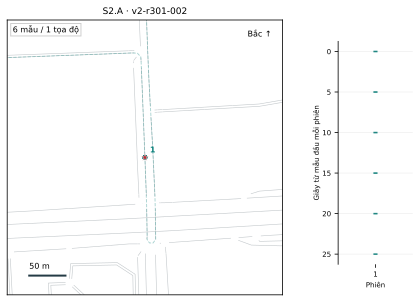
S2.A / 12 bản ghi. Dừng có chủ đích ≥20 giây; lấy truy vấn mỗi 5 giây.
u301_05: 6 mẫu
Đọc sample. 6 mẫu cùng một tọa độ, cách nhau 5 giây; đoạn dừng thật dài 29 giây. Sáu vạch thời gian bị chồng thành một chấm trên map.
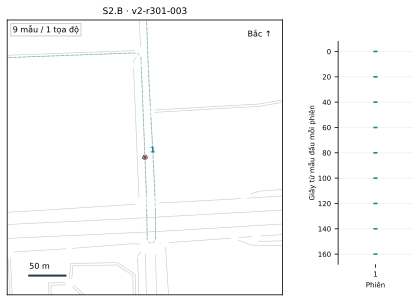
S2.B / 12 bản ghi. Dừng ≥120 giây; lấy truy vấn mỗi 20 giây.
u301_06: 9 mẫu
Đọc sample. 9 mẫu cùng một tọa độ, cách nhau 20 giây; đoạn dừng dài 179 giây. Đối thủ có cửa sổ dài hơn để kết hợp bằng chứng, không chỉ một bản tin.
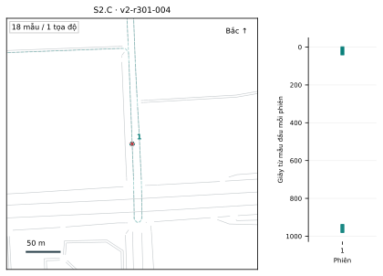
S2.C / 12 bản ghi. Hai lần dừng trên cùng làn, mỗi lần ≥20 giây; ở giữa thực sự di chuyển.
u301_07: 18 mẫu
Đọc sample. 18 mẫu chia hai đợt, mỗi đợt 9 mẫu. Hai lần dừng dài 44 giây tại cùng tọa độ; khoảng trống giữa hai cụm thời gian là lúc xe rời đi rồi quay lại.
S3 — tái dựng đoạn đường đã đi
Rủi ro chung: Đối thủ ghép các bản tin theo đường hợp lệ và thời gian di chuyển để tái dựng đoạn đã đi. Rủi ro nằm ở cả chuỗi: từng điểm mơ hồ vẫn có thể tạo ra một tuyến dễ đoán.
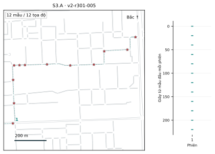
S3.A / 12 bản ghi. Đoạn di chuyển ≥60 giây qua ≥3 cạnh; gửi mỗi 20 giây.
u301_00: 12 mẫu
Đọc sample. 12 mẫu của u301_00 cách nhau 20 giây. Chuỗi điểm cung cấp nhiều ràng buộc để nối tuyến; nét đứt là đường thật chỉ dùng chấm.
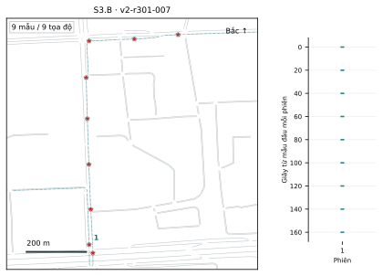
S3.B / 11 bản ghi. Ít nhất một nửa số cạnh được lấy mẫu chỉ có một hướng đi tiếp: hành lang ít lựa chọn.
u301_00: 9 mẫu
Đọc sample. 9 mẫu; 55,6% cạnh được lấy mẫu chỉ có một hướng đi tiếp. Đường ít nhánh có thể khiến chuỗi dễ suy hơn dù từng vị trí được làm mờ.
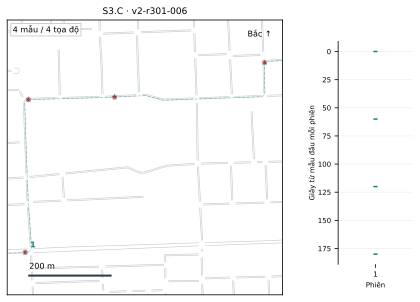
S3.C / 12 bản ghi. Lấy mẫu đoạn di chuyển thưa hơn, mỗi 60 giây.
u301_00: 4 mẫu
Đọc sample. 4 mẫu của cùng đoạn trong A, cách nhau 60 giây. Khoảng trống lớn hơn nhưng đối thủ vẫn có thể dùng mạng đường để nối các khả năng.
S9 — suy ra điểm xuất phát bị che
Rủi ro chung: Từ phần sau được công bố, đối thủ suy ngược nơi xuất phát nhờ đường vào/ra và phiên lặp. Hai sao bị che ở B là hai khả năng phải phân biệt; không phải bản đồ đã chứng minh đoán đúng.
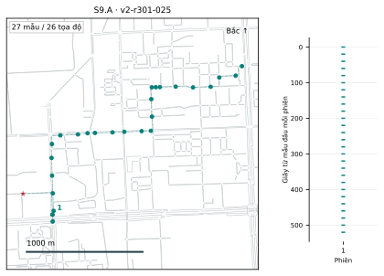
S9.A / 12 bản ghi. Cạnh xuất phát chỉ một lối ra. Che 60 giây đầu, lấy phần còn lại mỗi 20 giây.
u301_00: 27 mẫu
Đọc sample. Sao là FCD[0]; cửa sổ bắt đầu ở FCD[60] sau khi che 60 giây. Chỉ một lối ra có thể giúp suy ngược nguồn xuất phát từ phần còn công bố.
S9.B / 11 bản ghi. Hai chuyến khác điểm đầu nhưng nhập một đoạn chung; chỉ cấp từ chỗ nhập tuyến.
u301_00: 28 mẫu; u301_04: 28 mẫu
Đọc sample. Hai điểm đầu cách 281,76 m rồi nhập tuyến. Chỉ cấp dữ liệu sau nhập; hai sao là hai đáp án bị giấu mà đối thủ phải phân biệt.
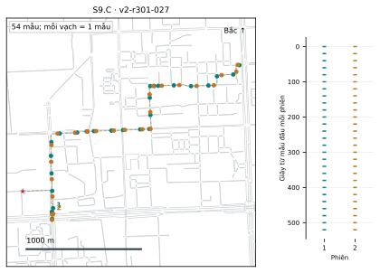
S9.C / 12 bản ghi. Nhiều chuyến có cùng điểm xuất phát dự kiến; che 60 giây đầu từng chuyến.
u301_00: 27 mẫu; u301_09: 27 mẫu
Đọc sample. u301_00/u301_09 lặp cùng điểm đầu dự kiến; mỗi phiên che 60 giây đầu. Nhiều cửa sổ có thể bổ sung bằng chứng về cùng nguồn xuất phát.
S10 — suy ra điểm kết thúc bị che
Rủi ro chung: Đối thủ suy nơi đã kết thúc từ phần trước được công bố và ràng buộc đường/phiên lặp. S6 hỏi tương lai khi đang đi; S10 hỏi đuôi đã bị giấu sau chuyến. Hai đích ở B kiểm tra mức mơ hồ còn lại.
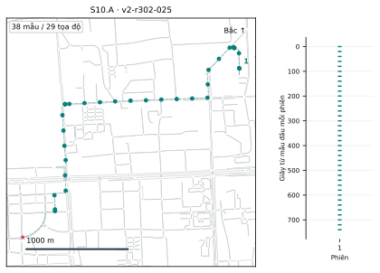
S10.A / 11 bản ghi. Cạnh kết thúc chỉ một lối vào. Che 60 giây cuối của chuyến đã hoàn tất.
u302_08: 38 mẫu
Đọc sample. Sao là FCD cuối [817] của u302_08; che 60 giây cuối. Đường chỉ một lối vào có thể giúp suy đoạn kết thúc từ phần trước còn thấy.
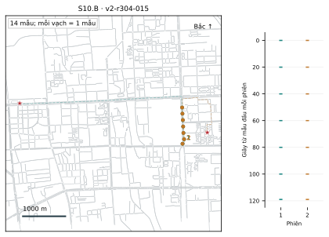
S10.B / 4 bản ghi. Hai chuyến chung tiền tố nhưng tới hai đích khác nhau; giữ đoạn cuối làm đáp án ngoại tuyến.
u304_00: 7 mẫu; u304_02: 7 mẫu
Đọc sample. Cùng cặp và tiền tố như S6.A, nhưng hỏi nơi đã kết thúc sau khi chuyến hoàn tất. Hai sao cách 4,47 km; phần đuôi nét đứt không cấp cho đối thủ.
S10.C / 12 bản ghi. Nhiều chuyến cùng điểm kết thúc dự kiến; che 60 giây cuối từng chuyến.
u301_00: 27 mẫu; u301_09: 27 mẫu
Đọc sample. u301_00/u301_09 lặp cùng đích dự kiến và cùng che 60 giây cuối. Đối thủ có thể kết hợp nhiều phiên để khoanh đích, chưa đủ gọi đó là nơi làm việc.
S5 — dự đoán cạnh đường kế tiếp
Rủi ro chung: Đối thủ dùng tiền tố và ngã rẽ để đoán cạnh kế tiếp chưa được công bố. Không cần biết tên xe. Phải so với mức đoán chỉ từ bản đồ, nhất là ca một lối đi.
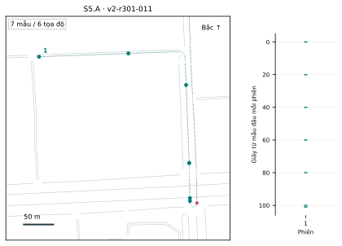
S5.A / 12 bản ghi. Chỉ tiền tố trước một lượt rẽ có ≥2 lựa chọn; nhãn là cạnh kế tiếp thực sự đi vào.
u301_00: 7 mẫu
Đọc sample. 7 mẫu tiền tố; nhãn tương lai ở FCD[106], cạnh 1055449630. Có nhiều lựa chọn tại lượt rẽ, nên phải dự đoán cạnh thật sự được chọn.
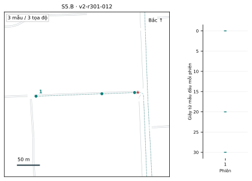
S5.B / 12 bản ghi. Lượt chuyển chỉ có 1 lựa chọn; kiểm tra mức suy luận vốn đã có từ bản đồ.
u301_00: 3 mẫu
Đọc sample. 3 mẫu tiền tố; nhãn ở FCD[31], cạnh 177353867#16. Lượt chuyển chỉ có một lựa chọn: phải so với mức đoán nền từ bản đồ.
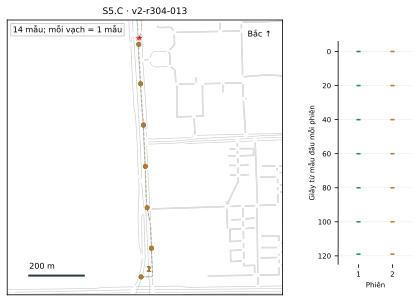
S5.C / 4 bản ghi. Hai chuyến chung tiền tố tuyến kế hoạch nhưng đi vào hai cạnh khác nhau. Tốc độ và thời điểm không bắt buộc giống hệt.
u304_00: 7 mẫu; u304_02: 7 mẫu
Đọc sample. Mỗi phiên có 7 mẫu tiền tố tới FCD[119], rồi vào hai cạnh khác nhau tại FCD[122]. Hai sao gần nhau vẫn có thể thuộc hai nhãn cạnh khác nhau.
S6 — dự đoán đích chưa tới
Rủi ro chung: Đối thủ dự đoán đích từ tiền tố và lịch sử được phép. Năm lần tới một đích không đảm bảo chuyến mới cũng vậy; cần so với tần suất nền. Rủi ro là biết nơi sắp đến trước khi chuyến kết thúc.
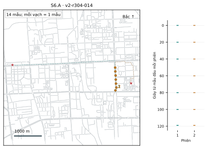
S6.A / 4 bản ghi. Hai chuyến chung tiền tố nhưng có đích khác nhau; phần sau không được cấp.
u304_00: 7 mẫu; u304_02: 7 mẫu
Đọc sample. Hai tiền tố của u304_00/u304_02 dẫn tới hai đích cách 4,47 km. Hai sao là đích tương lai giữ kín; tiền tố chưa quyết định một đích duy nhất.
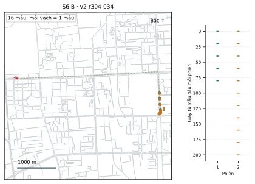
S6.B / 5 bản ghi. Hai đích cách nhau ≤500 m: phân biệt đúng đích có thể khó dù sai số tọa độ nhỏ.
u304_00: 5 mẫu; u304_12: 11 mẫu
Đọc sample. u304_00/u304_12 có hai đích chỉ cách 46,21 m. Dự đoán gần về tọa độ có thể vẫn chọn sai đích: cần chấm cả hai khía cạnh.
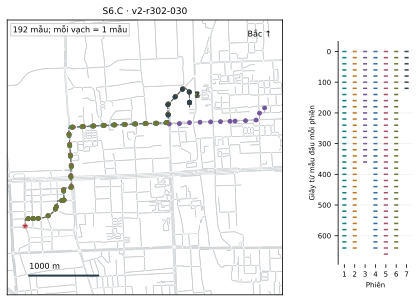
S6.C / 10 bản ghi. Sáu chuyến lịch sử: 5 tới đích thường, 1 tới đích hiếm; chỉ tiền tố của chuyến hiện tại. Lịch sử phải được bảo vệ trước khi cấp.
6 phiên lịch sử + phiên hiện tại: 7 mẫu tiền tố.
Đọc sample. Sáu chuyến lịch sử: 5 đích thường, 1 đích hiếm. Phiên thứ bảy chỉ cấp 7 mẫu tiền tố; phải phân biệt suy từ transcript với đoán theo tần suất lịch sử.
S8 — định vị khi có dữ liệu người đi cùng
Rủi ro chung: Vị trí xe phụ trợ có thể thu hẹp vị trí xe mục tiêu khi chúng đi gần nhau. So độ định vị có/không có phụ trợ. Ca C kiểm tra bẫy ‘ở gần tức là đồng hành’; hình chưa chứng minh tấn công thành công.
S8.A / 12 bản ghi. Đi cùng một phần rồi tách; ở gần ≤100 m trong ≥10 giây liên tục.
u301_00: 30 mẫu; u301_02: 24 mẫu
Đọc sample. Hai xe có nhãn đồng hành, gần nhau ở 325/466 thời điểm đồng bộ. Dữ liệu xe phụ trợ có thể giúp định vị ở đoạn đi chung; sau tách tuyến lợi thế có thể đổi.
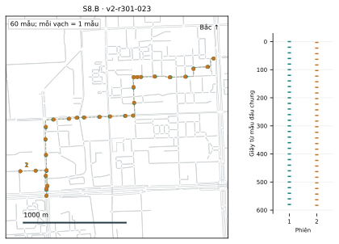
S8.B / 9 bản ghi. Chung tuyến; ≥80% thời điểm đồng xuất hiện cách ≤100 m, có ≥10 giây liên tục ở gần.
u301_00: 30 mẫu; u301_01: 30 mẫu
Đọc sample. Hai xe có nhãn đồng hành và gần nhau ở 590/590 thời điểm đồng bộ. Đây là mẫu để kiểm tra nguy cơ phụ trợ kéo dài gần suốt cửa sổ.
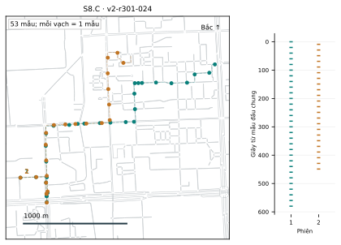
S8.C / 12 bản ghi. Không gán quan hệ đồng hành nhưng tình cờ ở gần; đối chứng âm.
u301_00: 30 mẫu; u301_03: 23 mẫu
Đọc sample. Không gán đồng hành nhưng vẫn gần nhau ở 309/460 thời điểm. Mẫu âm kiểm tra giả định ‘ở gần tức đi cùng’; mục tiêu vẫn là định vị xe khi có/không có phụ trợ.
S4 — liên kết danh tính giữa các phiên
Rủi ro chung: Đối thủ tìm dấu hiệu tuyến/lịch lặp để nối hai phiên dù đổi mã hoặc thiết bị. Liên kết làm lộ lịch sử cùng chủ thể; biết tên thật còn cần bằng chứng phụ. Màu session không phải nhãn người.
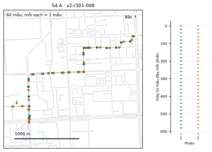
S4.A / 12 bản ghi. Hai phiên không chồng lấn, cùng người và cùng thiết bị.
u301_00: 30 mẫu; u301_09: 30 mẫu
Đọc sample. u301_00 và u301_09 cùng người, cùng thiết bị. Hai màu là hai phiên, không phải hai người; mẫu kiểm tra khả năng nối lại chúng.
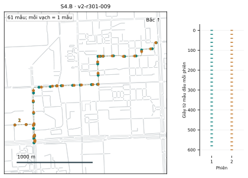
S4.B / 12 bản ghi. Cùng người nhưng đổi thiết bị: liên kết người đúng, liên kết thiết bị sai.
u301_00: 30 mẫu; u301_10: 31 mẫu
Đọc sample. u301_00 và u301_10 cùng người nhưng khác thiết bị. Nếu đối thủ vẫn nối được từ tuyến/lịch, đổi thiết bị chưa đủ ngăn theo dõi người.
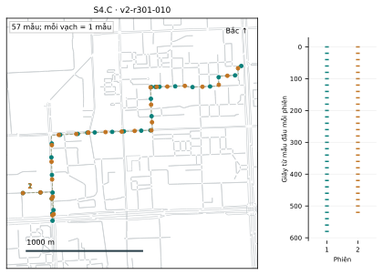
S4.C / 12 bản ghi. Khác người nhưng dùng chung thiết bị: liên kết người sai, liên kết thiết bị đúng.
u301_00: 30 mẫu; u301_11: 27 mẫu
Đọc sample. u301_00 và u301_11 khác người nhưng cùng thiết bị. Gộp hai phiên theo thiết bị sẽ đúng ở mức thiết bị nhưng sai ở mức người.
S7 — suy ra nội dung hoặc ý định truy vấn
Rủi ro chung: Rủi ro nằm ở nội dung: pharmacy → clinic → hospital có thể gợi ý mục đích khám bệnh dù vị trí mờ. Đây là suy ý định, không chẩn đoán bệnh; nhãn hiện tại được gán tổng hợp.
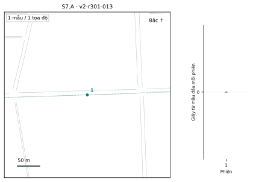
S7.A / 36 bản ghi. Gửi nguyên văn; nhãn tổng hợp gồm khám bệnh, mua sắm, đi đường dài.
u301_00: 1 mẫu
Đọc sample. Một lần query clinic, nhãn ý định tổng hợp medical_visit. Ngay cả khi giấu vị trí, nội dung nguyên văn vẫn có thể gợi ý nhu cầu.
S7.B / 36 bản ghi. Trộn truy vấn thật trong bó cố định 6 loại; chính sách tham chiếu, chưa phải đầu ra BR-Dummy.
u301_00: 1 mẫu
Đọc sample. Cùng query thật clinic nhưng bó công bố gồm 6 loại. Đối thủ không nhận cờ query thật; map giống A vì khác biệt nằm ở nội dung gửi.
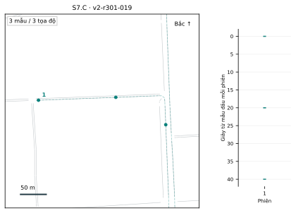
S7.C / 36 bản ghi. Cùng truy vấn đầu nhưng chuỗi sau khác nhau; kiểm tra suy luận từ chuỗi.
u301_00: 3 mẫu
Đọc sample. Ba lần query: pharmacy → clinic → hospital tại 0, 20, 40 giây. Chuỗi nội dung có thể gợi ý ý định rõ hơn một query đơn lẻ; chưa phải bằng chứng người dùng mắc bệnh.
3. Related works gần đây: cơ chế và phạm vi
Khảo sát tập trung vào công trình công bố trong 21/09/2023–21/09/2026, liên quan tới công bố vị trí/quỹ đạo, nội dung, liên kết hoặc đánh giá bảo vệ. Đây là cập nhật có chọn lọc, chưa phải tổng quan hệ thống bao quát mọi paper. Mỗi nguồn được đưa vào đều có một dòng metrics ở mục sau. Liên hệ với S1–S10 là phân tích của nghiên cứu này, không phải các paper đã đánh giá đúng bộ ca A/B/C của ta.
| Nguồn | Cách tiếp cận trong 1–2 dòng | Liên hệ và giới hạn |
|---|---|---|
| TransProtect (2024) [R1] | Học ngữ cảnh không gian–thời gian để tạo ứng viên; phối hợp cơ chế nhiễu/tối ưu để công bố vị trí thay thế. | Gần S1–S3; đầu ra không phải tập thật + dummy. |
| Semantic correlation (2026) [R2] | Dự báo ngữ nghĩa bằng LSTM/attention, chọn dummy phù hợp chuyển tiếp đường. | S1–S3; giống ngữ nghĩa không tự bảo vệ ý định S7. |
| Fake queries (2026) [R3] | Chèn truy vấn toàn giả giữa các lần truy vấn để gây khó nối đường qua thời gian. | S2–S3; cần tính toàn bộ bản tin chèn. |
| Road-aware PTPPM (2025) [R4] | Cá nhân hóa nhiễu theo nhạy cảm và tương quan, dùng mạng đường để ràng buộc đầu ra. | S1–S3 và phụ thuộc thời gian; preprint, không chứng minh đã giải S5/S6 của ta. |
| CPCROK (2025) [R5] | Dùng dự báo Kalman/RNN và thông điệp giả hỗ trợ đổi bí danh xe trong mạng thưa. | Liên kết xe S4; bối cảnh beacon VANET khác truy vấn POI. |
| DP-FETC (2025) [R6] | Sinh quỹ đạo từ đặc trưng thống kê; xử lý điểm đầu/cuối cho quỹ đạo tương quan cao. | Gần tương quan S8 và đầu/cuối S9/S10; xuất bản ngoại tuyến. |
| Improved PIR (2025) [R7] | Kết hợp truy hồi riêng tư theo từ khóa, BFV và tổ chức chỉ mục không gian. | Vị trí + nội dung S7; giao diện mã hóa khác dummy; mới xác minh tóm tắt. |
| SoK (2024) [R8] | Hệ thống hóa cách kiểm tra tính hữu dụng, bảo vệ và khả năng triển khai của quỹ đạo sinh. | Cơ sở thiết kế phép đo và đối thủ; không phải đối chứng thứ bảy. |
| PRISM (2025) [R9] | Dự báo LSTM kết hợp ánh xạ ngữ nghĩa phân cấp để bảo vệ chủ động. | Gợi ý xử lý ngữ cảnh/tương lai; chưa xác minh tác vụ dự đoán đích theo S6. |
| Options to Action (2026) [R10] | Nghiên cứu việc sử dụng các tính năng riêng tư trên ứng dụng thể thao. | Liên quan che đầu/cuối; tỷ lệ bật tính năng không phải tỷ lệ chống tấn công. |
Đối chứng lịch sử được tách riêng. DLS [B1] và RDG [B2] giữ vai trò mốc nền. AnotherMe [B3] thuộc số tạp chí 2024 nhưng công bố trực tuyến 11/09/2023, sớm hơn cửa sổ 10 ngày; giữ như ngoại lệ theo yêu cầu đối chứng. Không dùng ba ngoại lệ này để chứng minh khảo sát đã cập nhật gần đây.
Khoảng trống còn lại. Không ép quan hệ “một scenario = một paper giải quyết trọn vẹn”. Riêng S5/S6 cần kiểm chứng đầu suy luận tương lai đúng cửa sổ; tài liệu dùng dự báo bên trong cơ chế bảo vệ chưa đủ làm bằng chứng chống suy đoán đích. S8/S9/S10 cũng phải phân biệt xuất bản ngoại tuyến với dịch vụ trực tuyến.
Cơ chế liên quan trực tiếp tới S9/S10: mức phù hợp và bài học
Bổ sung rà soát ngày 24/09/2026. “Có cơ chế cho điểm đầu/cuối” khác “đã qua benchmark A/B/C của ta”. Giữ nguồn nền ngoài ba năm khi nó trực tiếp giải bài toán; không đổi năm xuất bản hoặc gọi một chương tổng thuật là model mới.
| Nguồn / vai trò | Có thể áp dụng tới đâu? | Metrics / điều cần học |
|---|---|---|
| S-TT [B4]; trình bày lại [R11] | Trực tiếp che địa điểm nhạy cảm ở đuôi quỹ đạo đã hoàn tất. Xét nhiều chuyến cùng đích. Đảo chiều hình học để xét đầu chuyến là phép thích nghi ngoại tuyến của ta, không phải bảo đảm online. | k-site-unidentifiability dưới tập hàm tấn công đã định; độ dài đoạn bị bỏ. Cắt tới khi tập địa điểm còn mơ hồ theo kiểm tra hướng/khoảng cách; giữ cùng tập bảo vệ qua các chuyến. |
| Endpoint Privacy Zones + đánh giá [B5] | EPZ che đầu/cuối nhưng vẫn có thể bị suy từ điểm biên, mạng đường và metadata khoảng cách. Đây là nguồn tấn công/countermeasure, không phải bằng chứng EPZ đủ an toàn. | Tỷ lệ khôi phục địa điểm, độ ẩn danh hiệu dụng; kiểm tra cả metadata và nhiều hoạt động. Không gọi việc xóa tọa độ là xóa toàn bộ rò rỉ. |
| Data Stream Obfuscator [B6] | Cơ chế luồng có vùng/thời gian riêng tư và cache ánh xạ nhiễu nhất quán qua các dịch vụ. Có thành phần phù hợp khi đầu/cuối nằm trong vùng/thời gian nhạy cảm; chưa xác minh kết quả trên S9/S10. | Nguồn truy cập xác nhận kiến trúc/chống trung bình nhiều bản nhiễu; chưa đủ định nghĩa metric để chép số. Học cách quản lý trạng thái và quyền phát dữ liệu nhất quán. |
| PRISM 2025 [R9] | Dự đoán LSTM và ánh xạ ngữ nghĩa để xử lý điểm nhạy cảm trước khi lộ. Chỉ là thành phần có thể học cho gate; chưa xác nhận phép thử suy điểm đầu/cuối. | LPI, TDD, DC, PPT; định nghĩa đầy đủ còn cần toàn văn. Không chuyển các số cải thiện chung thành kết quả S9/S10. |
| AGeoI + dummy cho EV 2024 [R12] | Bảo vệ vị trí truy vấn trạm sạc bằng nhiễu và dummy. Có thể học phần utility của truy vấn nhưng không có căn cứ coi là cơ chế che biên. | Bảo đảm approximate Geo-I và QoS trạm sạc; giao diện dịch vụ khác POI/che đầu cuối của ta. |
Ưu tiên học S-TT cho tiêu chí rủi ro tại biên và EPZ cho bộ đối thủ. PRISM/AGeoI hỗ trợ thiết kế, không thay thế bằng chứng trực tiếp. Chưa thêm các nguồn này thành đối chứng thứ 7–11: sáu đối chứng chính giữ nguyên; có thể thêm S-TT ở nhánh xuất bản ngoại tuyến khi tái lập được.
4. Sáu phương pháp đối chứng và điều kiện so sánh
| Phương pháp | Backbone và đầu vào/đầu ra | Vai trò trong benchmark |
|---|---|---|
| DLS [B1] | Thống kê xác suất truy vấn/entropy; nhận vị trí hiện tại và phân bố nền, công bố tập vị trí thật + dummy. | Mốc dummy thống kê; dùng nguyên lý chọn của paper, bổ sung wrapper trạng thái nếu cần và ghi rõ. |
| RDG [B2] | Thống kê chuyển tiếp, tối ưu lựa chọn dummy qua chuỗi; đầu ra các tập ứng viên theo thời gian. | Mốc có xét liên kết thời gian; Viterbi thuộc phía tấn công/đánh giá. |
| TransProtect [R1] | Mô hình học sâu tạo ứng viên theo ngữ cảnh, kết hợp nhiễu/tối ưu; công bố một vị trí thay thế. | Đối chứng khác loại đầu ra; không cho đối thủ “chọn phần tử thật” trong một tập không chứa nó. |
| Semantic correlation [R2] | LSTM/attention + lọc theo đường/ngữ nghĩa; công bố thật cùng K−1 dummy. | Kiểm tra ích lợi của ràng buộc ngữ nghĩa so với thống kê. |
| Fake-query insertion [R3] | Quy tắc tạo/chèn truy vấn toàn giả dựa trên tính nối tiếp; transcript có thêm thời điểm/bản tin. | Giữ đúng lịch chèn; không cho đối thủ biết nhãn thật/giả nội bộ. |
| AnotherMe [B3] | Hệ thống sinh quỹ đạo ảo trực tuyến, ánh xạ POI và lập tuyến; phục vụ qua vị trí/quỹ đạo thay thế. | Đối chứng thứ sáu. Tái lập nhánh trực tuyến hoặc gắn nhãn adapter ngoại tuyến hiện có. |
AnotherMe: sửa đúng vai trò và trạng thái
Paper gốc mô tả hệ thống online; không nên gọi bản thân AnotherMe là phương pháp ngoại tuyến. Tuy nhiên adapter đang có trong repo xử lý cả đoạn/chuyến và đã được tách khỏi nhánh trực tuyến. Việc thêm tên vào bảng chưa có nghĩa đã hoàn tất một phép so sánh nhân quả với năm phương pháp còn lại. Mã tác giả: https://github.com/fang-zhiyou/AnotherMe.
Cần đóng gói giao diện theo tiền tố, kiểm tra đầu ra trước thời điểm t không đổi khi sửa phần tương lai, và xác định các ca áp dụng. Nếu chỉ chạy được adapter cả đoạn, báo riêng kết quả tham chiếu ngoại tuyến; không xếp chung điểm tổng với cơ chế chỉ thấy tiền tố. Khả năng áp dụng của phương pháp gốc không suy từ việc adapter hiện tại không hỗ trợ một ca.
Sáu điều phải đồng nhất trước khi so điểm
- Đáp án: cùng vị trí/đoạn đường/nhãn cần suy ra; không đổi tác vụ giữa các phương pháp.
- Đầu vào và thời gian: cùng tiền tố, lịch sử, phụ trợ; không dùng tương lai trong nhánh trực tuyến.
- Đầu ra và đối thủ: đối thủ được thiết kế theo transcript thật sự công bố, nhưng chấm cùng mục tiêu.
- Dịch vụ: cùng tập POI, yêu cầu top-5, lọc trên thiết bị; ghi độ sâu phản hồi L và tất cả truy vấn phát sinh.
- Nguồn lực: cùng phần cứng, ranh giới đo và ngân sách; không đồng nhất K dummy, K ứng viên nội bộ và k=5 POI.
- Mức tái lập: phân biệt mã gốc, tái hiện và adaptation; báo lỗi/không áp dụng, không bỏ khỏi mẫu số để tăng điểm.
Sáu đối chứng là danh sách nghiên cứu, chưa mặc định cả sáu đều bảo vệ nội dung S7 hoặc danh tính S4. Nhánh không đổi nội dung có thể được đo như đối chứng lộ nội dung, nhưng phải trình bày đúng khả năng của nó.
Bảng kết quả mới dùng control truy vấn cố định, cache, bulk và ablation nội bộ. Đó không phải sáu phương pháp từ paper trong bảng này. Các adapter hiện có chưa phải tái lập tương đương đầy đủ; không đổi tên control thành paper để diễn giải mức chênh lệch.
5. Bảng metrics gốc của toàn bộ nguồn được chọn
Mũi tên mô tả hướng mong muốn theo nghĩa metric gốc. “CX” = chưa xác minh đủ trong nguồn đã truy cập, không có nghĩa paper chắc chắn không đo. Một số nguồn có vai trò khảo sát/hành vi nên không có ba cột tương đương thuật toán. Không lấy số đo trên dataset khác nhau để xếp hạng trực tiếp.
| Nguồn | Privacy / chẩn đoán | Utility | Performance / phạm vi đã kiểm tra |
|---|---|---|---|
| R1: TransProtect | EIE ↑: sai số suy luận kỳ vọng dưới đối thủ, đơn vị khoảng cách. | Sai lệch chi phí hành trình Δc ↓, so cùng đích. | CX đối với đầy đủ byte + độ trễ đầu-cuối; §5.1.4 và Eq. 13. |
| R2: Semantic | ASR ↑ theo điều kiện ẩn danh; DER ↑ đánh giá dummy/ngữ nghĩa. | DER không phải chất lượng top-5 POI. | Thời gian sinh ↓. Xem §6.3–6.5; cần khóa cách tính DER khi tái lập. |
| R3: Fake queries | Số đường khó phân biệt ↑; ASR ↑ dưới các phép loại ứng viên. | CX về chất lượng POI. | Độ trễ/tạo truy vấn và RSS ↓; §6.3–6.6. |
| R4: PTPPM | Sai số kỳ vọng của đối thủ ↑; xác suất tấn công thành công ↓. | Khoảng dịch chuyển kỳ vọng giữa thật và đầu ra ↓. | CX chi phí dịch vụ đầu-cuối; §VI, Eq. 26–27. |
| R5: CPCROK | Tỷ lệ khớp quỹ đạo của đối thủ ρ ↓. | Không cùng tác vụ top-5 POI. | Số quỹ đạo giả tối thiểu ψ ↓; §5.4. Đây là proxy chi phí, không phải byte. |
| R6: DP-FETC | MI ↓ giữa quỹ đạo gốc và sinh; paper trình bày bảo đảm ε-DP. | JSD ↓ cho phân bố vị trí, thời lượng và quãng đường. | Phân tích độ phức tạp; chưa có phép đo LBS đầu-cuối tương đương. |
| R7: Improved PIR | Phân tích an toàn; metric tấn công thực nghiệm CX. | CX metric truy hồi cụ thể. | Tóm tắt nêu tổng chi phí tính toán; đơn vị/mẫu số CX. |
| R8: SoK | Khuyến nghị kiểm tra bằng tấn công tái dựng/liên kết, bên cạnh bảo đảm hình thức. | Phân biệt metric phân bố, hình học và tác vụ downstream. | Khả năng triển khai/tính toán trong khung khảo sát; không có “điểm model SoK”. |
| R9: PRISM | Location Privacy Index (LPI); công thức CX. | Total Distance Difference; Directional Consistency; định nghĩa CX. | Privacy processing time, thời gian phản hồi; thông tin công khai, chưa tái lập. |
| R10: Adoption | Tỷ lệ dùng tính năng bảo vệ; không đo attacker success. | Nghiên cứu nhận thức/trở ngại sử dụng, không có Recall POI. | Không có chi phí thuật toán so sánh trực tiếp. |
| B1: DLS | Entropy phân bố ứng viên ↑. | CX trong hồ sơ đã kiểm tra. | CX trong hồ sơ đã kiểm tra. |
| B2: RDG | Entropy/chuyển tiếp ↑ và tỷ lệ bảo vệ dưới Viterbi ↑. | CX trong hồ sơ đã kiểm tra. | CX trong hồ sơ đã kiểm tra. |
| B3: AnotherMe | Nhận dạng quỹ đạo thật/ảo; gần mức ngẫu nhiên là mục tiêu khi tập cân bằng. | CX định nghĩa metric dịch vụ chi tiết. | Tóm tắt nêu độ trễ đáp ứng và pin; chưa xác minh đơn vị/mẫu số đầy đủ. |
Ba điểm dễ đọc nhầm
ASR không thống nhất giữa paper. Ở R2, thành công là đạt điều kiện không nhận diện vị trí thật với xác suất cao hơn 1/K. R3 kiểm tra ẩn danh trước các cách khai thác khác. Không đổi tên ASR thành Hit100 hoặc dùng ASR làm “tỷ lệ tấn công thành công” mà không nêu tử số.
Riêng DER ở R2 có hai cách diễn đạt: trung bình độ tương đồng và tỷ lệ dummy đạt điều kiện. Cần xác định cách thực thi trước khi tái lập, không coi hai cách là tự động tương đương. [R2]
Dummy trông thật chưa đủ. Nhận dạng thật/ảo của AnotherMe kiểm tra tính khó phân biệt; vẫn cần đo khả năng suy ngược vị trí thật. Tương tự, MI thấp hoặc entropy cao không tự xác nhận đối thủ cụ thể thất bại. [B3, R6, R8]
Chất lượng thống kê khác chất lượng dịch vụ. JSD bảo toàn phân bố; Δc kiểm tra chi phí đến cùng đích; Recall@5 kiểm tra đúng tập POI người dùng cần. Chúng trả lời ba câu hỏi khác nhau. [R1, R6, R8]
6. Từ hạn chế metrics gốc đến bộ đo chung
| Hạn chế khi dùng trực tiếp | Quyết định cho benchmark | Lập luận |
|---|---|---|
| Entropy/DER/nhận dạng ảo phụ thuộc biểu diễn nội bộ. | Lấy kết quả tấn công trên đáp án thật làm privacy chính. | Một vị trí thay thế và một tập dummy đều có thể bị suy vị trí; không cần cùng cấu trúc ứng viên. |
| MAE đơn lẻ có thể bị vài sai số lớn chi phối. | MAE + median + p90; Hit50/100/200. | Vừa thấy độ lớn sai số, phân bố, vừa thấy tỷ lệ vẫn đoán rất gần. |
| Metric vị trí không chấm được người/đích/ý định. | Giữ đầu đo riêng cho từng loại đáp án. | Không ép F1, mét và entropy thành cùng một đại lượng riêng tư tự nhiên. |
| Giữ phân bố hoặc điểm thay thế gần thật chưa chứng minh POI đúng. | Recall@5, tỷ lệ trả đủ, ΔD theo mạng đường. | Chấm tác vụ dịch vụ thực sự cung cấp; không chỉ chấm hình học đầu ra. |
| Số dummy hoặc thời gian sinh chưa đủ chi phí. | Byte/truy vấn thật; latency p50/p95; số bản tin phụ. | Tính cả phản hồi, truy vấn chèn và bước gộp/lọc trên thiết bị. |
| Một điểm tổng có thể che ca yếu. | Điểm tổng theo phạm vi khóa trước + bảng từng ca + ràng buộc tối thiểu. | Giữ cách lựa chọn gọn mà vẫn truy nguyên được đánh đổi. |
“Bộ đo đề xuất” ở đây là sự lựa chọn và cách vận hành hóa cho bài toán, không tuyên bố phát minh MAE, F1, Recall hoặc trung bình nhân. Đóng góp cần chứng minh là giao thức phù hợp với threat model và phát hiện được đánh đổi mà một metric đơn lẻ bỏ qua.
Privacy cho tọa độ: đo đối thủ, không đo khoảng cách nhiễu
x là vị trí thật; x̂ là ước lượng của đối thủ từ dữ liệu được phép. dE tính bằng mét sau đổi hệ tọa độ phù hợp, không lấy khoảng cách Euclid trực tiếp trên kinh/vĩ độ. MAE/median/p90 càng lớn thường càng khó định vị; Hit càng thấp càng tốt về riêng tư. Nhưng p90 cao chỉ cho biết đuôi sai số lớn, không chứng minh đa số người được bảo vệ tốt.
Quy ước phân vị: nearest rank, sắp e tăng dần rồi lấy e tại vị trí ceil(q·n), tính từ 1. Với [20,50,80,150,700] m: median=80 m, p80=150 m, p90=700 m. Quy ước cố định tránh kết quả khác nhau do phần mềm nội suy.
Privacy cho các kịch bản còn lại
| Phạm vi | Chỉ số chính / bổ sung |
|---|---|
| S1–S3, S9–S10 | Hit100 ↓; MAE/median/p90 ↑ và Hit50/200 ↓. S2 chấm điểm dừng; S3 chấm các thời điểm mục tiêu; S9/S10 chấm đầu/cuối. |
| S4 | Balanced accuracy ↓, precision/recall/F1 liên kết ↓; chấm người, xe, máy riêng. Mỗi đầu cần cả cặp dương và âm. |
| S5–S6 | Accuracy cạnh/đích ↓; macro-F1 nếu mất cân bằng. S6 báo thêm lỗi tọa độ; tập đích ứng viên cố định từ trước. |
| S7 | Macro-F1 ý định ↓; confusion matrix theo lớp. Tách nguyên văn và suy luận chuỗi. |
| S8 | Hit/MAE trong từng chế độ phụ trợ và chênh lệch bật–tắt; cùng tập mục tiêu, cùng đối thủ hợp lệ. |
Với mọi tác vụ, thêm S(chỉ phụ trợ) và ΔS = S(công bố + phụ trợ) − S(chỉ phụ trợ), trong đó S là độ thành công của đối thủ. S5.B có thể dễ đoán ngay từ bản đồ: ΔS nhỏ không đồng nghĩa mức riêng tư tuyệt đối cao.
Utility: kết quả POI còn phục vụ tốt không?
Mỗi truy vấn thật i có tập tham chiếu R* gồm tối đa 5 POI gần nhất hợp lệ của đúng loại, theo cùng oracle đường có hướng. R̂ là tối đa 5 POI sau nhận phản hồi, gộp, loại trùng và lọc trên thiết bị. L là độ sâu phản hồi của máy chủ, không phải k=5 của ứng dụng.
Trong workload hiện tại, “hợp lệ” còn yêu cầu POI đang khả dụng ở epoch của truy vấn. Tham chiếu và kết quả đều dùng cùng trạng thái server, loại POI và quy tắc xếp hạng; không chấm kết quả còn cache theo danh sách chuẩn của một thời điểm khác.
Ví dụ: tham chiếu {A,B,C,D,E}, kết quả {A,B,C,F,G}: Recall=3/5=0,6 nhưng C=1 vì vẫn đủ 5. Kết quả {A,B,C,D}: Recall=0,8, C=0. Chỉ có đáp án tham chiếu mới vào mẫu số; có đáp án nhưng trả rỗng nhận Recall=0, C=0. Báo số truy vấn không có đáp án, không âm thầm loại bỏ lỗi dịch vụ.
dG là đường ngắn nhất có hướng; Q ánh xạ lên mạng đường. Cả hai vế đều xuất phát từ vị trí thật, không so vị trí thật với vị trí giả. Chỉ chấm ΔD khi trả đủ số lượng và đáp án hợp lệ, báo số ca đủ điều kiện. Nếu tham chiếu thật sự là các POI gần nhất cùng tập đủ điều kiện thì ΔD ≥0; giá trị âm đáng kể cần kiểm tra oracle/tập lọc, không tự cắt về 0.
Ví dụ năm POI chuẩn có khoảng cách trung bình 600 m, năm POI sau bảo vệ là 850 m: ΔD=250 m. Khi chỉ trả bốn POI, không gán ΔD=0 để coi là tốt. Với S9/S10, lịch truy vấn thật phải được cố định trước chính sách che: truy vấn bị bỏ mà không được cache phục vụ vẫn tính là không phục vụ.
Performance: trả giá bao nhiêu để có mức bảo vệ đó?
| Đại lượng | Ranh giới phải ghi rõ |
|---|---|
| b: byte/truy vấn thật ↓ | Payload tuần tự hóa thực tế của cả yêu cầu lẫn phản hồi; gồm truy vấn chèn. Nếu chỉ tính payload, ghi rõ chưa tính TLS/TCP và không gọi là lưu lượng mạng đầy đủ. |
| Thời gian p50/p95 ↓ | Từ lúc ứng dụng có truy vấn thật đến lúc có kết quả sau lọc; bao gồm sinh bảo vệ, dịch vụ và gộp. Khi dùng oracle cục bộ, báo latency cục bộ, không suy ra trải nghiệm mạng thực. |
| Chi phí chẩn đoán | Số tọa độ/bản tin, số POI phản hồi, thời gian sinh, RAM; tách học và tiền xử lý khỏi trực tuyến. Pin chỉ báo nếu đo trên thiết bị. |
Vòng hiện tại có byte yêu cầu/phản hồi theo schema mô phỏng, nhưng chưa có latency đầu-cuối và lưu lượng HTTP/TLS. Chưa đủ để tính điểm performance tổng hợp hoặc Q thực nghiệm mới.
Mẫu số và độ độc lập
Chấm điểm từng mục tiêu rồi gộp theo bản ghi/chuyến, nhóm tuyến, ca A/B/C và scenario với trọng số được khóa. Giữ các phiên/cặp có quan hệ trong cùng split. Không cho S7 nhiều bản ghi hoặc chuyến dài áp đảo phần còn lại. Khoảng tin cậy lấy mẫu lại theo nhóm tuyến, không coi từng điểm FCD hoặc seed nhiễu là người độc lập.
7. Điểm tổng hợp privacy–utility–performance
Điểm tổng hợp phục vụ lựa chọn cấu hình trong cùng phiên bản benchmark và cùng phạm vi. Đây là điểm ra quyết định theo nhu cầu, không phải bảo đảm riêng tư mới hoặc xác suất an toàn. Vòng đầu chỉ xếp hạng chung S1, S2, S3, S9, S10; các giai đoạn sau mở phiên bản điểm khác.
Bước 1: đưa ba trục về cùng chiều tốt và thang 0–1
h là Hit100 của đối thủ đã chọn trên validation cho từng phương pháp/ca; đóng băng lựa chọn trước test. Báo thêm envelope của các đối thủ đã thử như phân tích độ nhạy. P cao nghĩa tỷ lệ định vị đúng trong 100 m thấp. Không dùng MAE để tự co giãn theo model tốt/xấu nhất của bảng, vì thêm một model sẽ làm điểm các model cũ đổi theo.
Trong f, g và b là mốc tốt và mốc xấu đã chốt trước, b>g. b_payload là byte/truy vấn thật, trung bình đều qua ca rồi scenario; T95 là giá trị lớn nhất trong các latency p95 từng ca. Như vậy một ca rất chậm không bị trung bình che lấp. Các mốc lấy từ yêu cầu dịch vụ/hardware hoặc pilot phát triển, không lấy từ test. Ở ví dụ dưới: byte tốt 2 kB, giới hạn 10 kB; latency tốt 50 ms, giới hạn 250 ms; 1 kB=1.000 byte. Đây chỉ là mốc minh họa.
Bước 2: kiểm tra điều kiện tối thiểu rồi xếp điểm
Đề xuất khởi đầu wP=wU=wF=1/3. Trung bình nhân khiến một trục rất yếu kéo điểm xuống; một trục bằng 0 cho Q=0. Trước khi chọn, kiểm tra Recall@5 từng ca ≥0,90 và giới hạn byte/latency đã định. Cấu hình không đạt được ghi “không khả thi”, dù vẫn có thể hiển thị điểm chẩn đoán. Còn thiếu một ca bắt buộc hoặc thiếu phép đo thì Q=NA; không tự bỏ ca rồi chia lại trọng số.
Ví dụ số — dữ liệu minh họa, không phải kết quả model
| Cấu hình | P / U | Byte; latency p95 | F | Q đều |
|---|---|---|---|---|
| A | 0.95 / 0.95 | 6,800 B; 130 ms | 0.490 | 76.2 |
| B | 0.70 / 0.95 | 3,600 B; 90 ms | 0.800 | 81.0 |
A làm đối thủ khó định vị hơn, nhưng B nhẹ hơn. Điểm tổng không nói A “thua về privacy”; nó nói B phù hợp hơn với bộ trọng số đang dùng. Utility trung bình 0,95 chưa đủ chứng minh mọi ca đạt 0,90; ví dụ giả định đã qua kiểm tra từng ca.
Trọng số thay đổi thì quyết định có đổi không?
| Ưu tiên (wP, wU, wF) | Q của A | Q của B | Thứ tự |
|---|---|---|---|
| Cân bằng (1/3, 1/3, 1/3) | 76.2 | 81.0 | B > A |
| Ưu tiên privacy (0,6; 0,2; 0,2) | 83.2 | 76.4 | A > B |
| Ưu tiên performance (0,2; 0,2; 0,6) | 63.8 | 80.6 | B > A |
Đây là đổi nhu cầu hợp lệ, không phải thay công thức sau khi thấy model nào thắng. Cần công bố hồ sơ trọng số chính trước test và giữ các hồ sơ còn lại làm phân tích độ nhạy. Thực nghiệm phải báo đủ P, U, F, Q, điều kiện khả thi và kết quả từng ca.
Mở rộng điểm sang S5/S6/S8 rồi S4/S7
Giai đoạn II bổ sung độ đúng cạnh/đích và chế độ có phụ trợ; giai đoạn III bổ sung liên kết và ý định. Khi đó có thể chọn một đại lượng thành công của đối thủ cho từng đầu để tính 1−S, nhưng không được coi 1−accuracy, 1−F1 và 1−Hit là cùng mức riêng tư tự nhiên. Số lớp, tỷ lệ cặp dương, tập ứng viên và mức đoán nền phải được cố định. Chỉ tạo Q đa nhiệm khi đã chốt trọng số tác vụ và phép chuẩn hóa tương ứng; hiện chưa có Q chung S1–S10.
S8 cần báo cả mức rủi ro tuyệt đối khi có phụ trợ và phần tăng thêm. S4 phải có ba đầu người/xe/máy; hiện còn thiếu nhãn/độ cân bằng nên chưa đủ điều kiện tạo điểm. Không gán các phần chưa đo bằng 0 hay dùng “không áp dụng” như điểm hoàn hảo.
Chấp nhận một điểm kết hợp ba trục, nhưng luôn gắn với phạm vi, trọng số và điều kiện áp dụng. Không có một con số duy nhất thay thế toàn bộ phân tích S1–S10.
Quy trình đánh giá đề xuất cho vòng tiếp theo
- Khóa phiên bản dataset, oracle POI, các cửa sổ, tập nhãn và quyền phụ trợ; ghi hash nguồn.
- Tách dữ liệu học, chọn cấu hình và xác nhận theo nhóm quan hệ. Dữ liệu từng dùng để chỉnh thiết kế không còn là kiểm thử mới.
- Học/chọn đối thủ trên phần được phép; chọn cấu hình bảo vệ và trọng số trên phát triển/validation, rồi đóng băng.
- Chạy toàn bộ cấu hình đã đăng ký, cùng seed nhiễu ghép cặp; giữ lỗi và ca thiếu, ghi nguyên nhân.
- Báo từng ca, từng nhóm, ba trục và điểm Q; khoảng tin cậy theo nhóm tuyến. Test dùng để kết luận, không để tiếp tục tối ưu.
Trong bộ minh họa 393 record, S5.C/S10.B có 4 bản ghi, S6.A có 4 và S6.B có 5. Bộ thực nghiệm mới có mẫu số riêng được ghi ở từng ca. Cần tăng nhóm độc lập theo điều kiện cố định; thêm cửa sổ từ cùng chuyến không khắc phục được thiếu độc lập.
8. Phương pháp hiện tại và dịch vụ mục tiêu
Mục tiêu: truy hồi các POI đang khả dụng gần người dùng, đồng thời hạn chế suy luận vị trí từ chuỗi truy vấn. Thiết bị biết bản đồ và danh mục POI; máy chủ giữ trạng thái khả dụng mới nhất. Ví dụ, ứng dụng cần tìm điểm dịch vụ còn nhận khách gần vị trí hiện tại. Trạng thái trong thực nghiệm là mô phỏng, chưa phải dữ liệu hoạt động thực tế.
Cấu hình làm việc: paced + slack 0,03 + cache phản hồi; K=5 tọa độ, L=10 POI mỗi loại và mỗi tọa độ; ứng dụng chọn top-5 tại thiết bị.
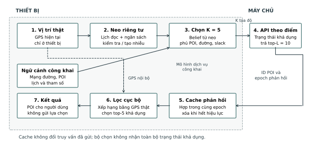
Lõi gồm cơ chế nhiễu xác suất, bộ lọc belief và tối ưu tổ hợp trên mạng đường; không phải deep learning đầu-cuối. Bộ chọn dùng lịch sử neo đã bảo vệ, mạng làn và POI công khai. Nó không đọc GPS thật, vận tốc thật, đích tương lai hoặc toàn bộ vector khả dụng của máy chủ.
Bản hiện tại tiếp tục công bố theo lịch cố định và được chấm qua cửa sổ của từng ca S1/S2/S3/S9/S10. Cổng cắt/buffer biên của các vòng trước không nằm trong cấu hình tạo ra kết quả mới. Các phép thử biên cũ được lưu riêng, tránh gán lợi ích của một cơ chế khác cho model đang báo cáo.
Neo riêng tư, ngân sách và bộ chọn theo dịch vụ
Khi được phép đọc GPS, cơ chế kiểm tra có nhiễu để giữ neo cũ hoặc lấy neo mới. Bộ lọc ngân sách dự trữ chi phí xấu nhất của bước kế tiếp trước khi cho đọc. Giãn đọc theo thời gian giúp giữ ngân sách cho chuyến dài; giữa các lần đọc hoặc khi không đủ ngân sách, đầu ra tiếp tục từ trạng thái đã bảo vệ.
| Tham số / khối | Cấu hình và ý nghĩa |
|---|---|
| Neo và kiểm tra | ε_release=ε_test=0,01 m⁻¹; θ=200 m. Support vị trí là tập công khai, không cắt riêng quanh GPS thật. |
| Ngân sách phiên | Tối đa 23 đơn vị 0,01: cận phiên 0,23 m⁻¹. Lần đầu cần 1 đơn vị; trước bước sau phải dự trữ 2. Nhánh tái dùng chi 1, nhánh tạo mới chi 2 trong phân tích transcript mở rộng. |
| Giãn đọc GPS | Ít nhất 60 giây giữa các lần đọc riêng tư. Đồng hồ truy vấn dịch vụ vẫn giữ nguyên. |
| Belief và miền khả thi | Belief gần đúng từ neo; mỗi track chỉ đi tới trạng thái làn hợp lệ trong thời gian đã trôi qua. |
| Phủ dịch vụ và slack | Tối ưu hợp top-L theo nhu cầu top-5 từ belief. Slack 0,03 cho phép giảm tối đa 0,03 objective hiện tại để tiến về mục tiêu hữu ích; không phải cận giảm Recall thật. |
wₜ được suy từ belief và danh mục tĩnh. Bộ chọn chưa dự báo hoặc tối ưu trực tiếp trạng thái khả dụng hiện tại. Máy chủ mới lọc theo trạng thái khi trả lời; thiết bị dùng phản hồi để phục vụ. Tăng Recall trên workload mới vì vậy không tự là một đóng góp tối ưu động.
Cận tọa độ lý tưởng với đồng hồ cố định chặn tỷ số xác suất bởi exp(0,23·D∞), với D∞ là độ lệch lớn nhất giữa hai chuỗi GPS. Hai phiên có thể liên kết cộng thành tối đa 0,46 m⁻¹. Ở 50 m, cận một phiên khoảng 98.716: đây không phải xác suất an toàn và không đủ để kết luận che được nhà. Chứng minh dựa trên kernel lý tưởng; bộ sinh dấu phẩy động chưa có chứng nhận pure-DP chính xác.
Cache theo hiệu lực: lợi ích và điều kiện bảo toàn riêng tư
Máy chủ giữ trạng thái cố định trong từng khoảng 60 giây và gắn epoch cho phản hồi. Thiết bị giữ hợp các POI đã nhận trong epoch hiện tại; sang epoch mới thì xóa. Đây là thời hạn hiệu lực dữ liệu, độc lập về vai trò với khoảng giãn đọc GPS, dù thí nghiệm đang đặt cùng giá trị.
Ví dụ: lần trước trả {A,B,C}, lần hiện tại trả {C,D,E}. Nếu cùng epoch, thiết bị chọn từ {A,B,C,D,E}; chỉ dùng phản hồi mới sẽ bỏ quên A và B. Sang epoch mới, A và B không được coi là còn khả dụng cho đến khi được xác nhận lại.
Utility: mọi POI trong Cₜ còn hợp lệ và Cₜ chứa Uₜ. Với cùng quy tắc khoảng cách và phá hòa, một POI thuộc top-5 chuẩn đã nằm trong Uₜ không thể bị loại bởi một POI xếp sau nó trong danh sách chuẩn. Vì vậy Recall sau cache không giảm. Lập luận cần trạng thái ổn định trong epoch, cùng bản đồ/loại POI và cùng quy tắc xếp hạng.
Privacy: cache không sửa tọa độ hay thời điểm truy vấn; top-5 cuối cùng chỉ ở thiết bị. Với trạng thái máy chủ độc lập với di chuyển như trong mô phỏng, phản hồi là hàm của truy vấn và dữ liệu máy chủ đã biết. Cache không phát sinh thêm thông tin tọa độ trong transcript này, nhưng cũng không làm tấn công cũ mất hiệu lực. Nếu gửi lượt nhấp, POI đã chọn, cache hit hoặc refresh tùy GPS, cần đánh giá lại kênh đó.
| Điều kiện sử dụng | Cách xử lý |
|---|---|
| API trả top-L theo điểm | Áp dụng K tọa độ → phản hồi → cache → xếp hạng cục bộ. |
| Có epoch / thời hạn hiệu lực | Chỉ hợp phản hồi cùng phiên bản; xóa cache hoặc tái xác nhận khi hết hạn. |
| Trạng thái đổi giữa epoch | Không áp dụng bảo đảm Recall đơn điệu nếu thiếu version/expiry bảo đảm tính hợp lệ. |
| API tải toàn bộ trạng thái | So với bulk trước khi dùng dummy: với 419 POI, bulk có lợi thế rõ trong thí nghiệm. |
9. Kết quả thực nghiệm của cấu hình hiện tại
Thiết lập, đơn vị quan sát và đối chứng
Mạng OSM khôi phục ngày 20/09 có 102.404 trạng thái làn và 419 POI thuộc sáu loại. Bộ mở rộng gồm 12 nhóm, 264 chuyến và 415 record; năm scenario ưu tiên dùng 102 chuyến nguồn và 173 record. Giữ nguyên tọa độ công bố, lịch toàn phiên và seed bảo vệ khi replay dịch vụ khả dụng. Ảnh minh họa ở mục dữ liệu thuộc bộ 393 record lịch sử, không phải nguồn của các số dưới đây.
Trạng thái mô phỏng độc lập với GPS, giữ nguyên 60 giây; p=0,8 là mức danh định, thêm p=0,5/0,95. Ba chuỗi trạng thái được chia sẻ giữa mọi phương pháp; mỗi chuyến replay từ thời gian tương đối 0. Seeds và vector trạng thái đầy đủ chỉ thuộc server/evaluator. Các phương án K5/slack được so trên dữ liệu phát triển; chọn cấu hình làm việc theo Recall trung bình dưới cùng cận ngân sách.
Recall gộp theo loại có đáp án → sự kiện → record → nhóm → ca, rồi trung bình đều 15 ca. Có đáp án nhưng trả rỗng nhận 0; loại không có POI khả dụng được đếm riêng, không gán 1. Bootstrap theo 12 nhóm, không coi điểm FCD, hai seed bảo vệ hoặc ba chuỗi trạng thái là người dùng mới.
Utility và chi phí phản hồi ở p=0,8
| Cấu hình | K | Recall ↑ | Ca ≥90% | Byte phản hồi / sự kiện ↓ |
|---|---|---|---|---|
| Paced + slack | 5 | 95,36% | 14/15 | 776,6 |
| Paced + slack + cache | 5 | 95,60% | 14/15 | 776,6 |
| Paced + cache | 5 | 94,57% | 14/15 | 776,2 |
| Cố định K5 + cache | 5 | 82,07% | 0/15 | 767,0 |
| Cố định K12 + cache | 12 | 97,61% | 15/15 | 1832,6 |
| Vị trí thật | 1 | 100,00% | 15/15 | 169,4 |
| Danh mục tĩnh | 0 | 87,62% | 1/15 | 0,0 |
| Trạng thái ban đầu | 0 | 77,58% | 1/15 | 1,3 |
| Bulk trạng thái mới | 0 | 100,00% | 15/15 | 17,1 |
K đếm tọa độ gửi, không đếm kết nối. K5 với sáu loại là 30 truy vấn loại–tọa độ mỗi sự kiện. Byte là thân phản hồi theo schema mô phỏng; chưa có HTTP/TLS hoặc độ trễ mạng. K=0 của bulk vẫn có yêu cầu tải trạng thái. Bản đồ/danh mục dùng chung, chưa tính chi phí tải lần đầu.
Cùng K5/L10, đạt 95,60% so với fixed K5 82,07%: tăng 13,53 điểm phần trăm. Đây là lợi thế utility; fixed K5 không dùng GPS để chọn tọa độ nên không suy ra ưu thế đồng thời về privacy.
Đủ 15 ca: dịch vụ mới và tấn công trên cùng transcript
| Ca | Nhóm / record | Recall +cache ↑ | Fixed K5 ↑ | MAE m ↑ | Hit100 ↓ | Hit500 ↓ |
|---|---|---|---|---|---|---|
| S1.A | 12 / 12 | 97,64% | 76,65% | 851,9 | 8,33% | 12,50% |
| S1.B | 12 / 12 | 95,90% | 79,44% | 832,5 | 8,33% | 20,83% |
| S1.C | 12 / 12 | 80,18% | 82,88% | 1674,1 | 0,00% | 0,00% |
| S2.A | 12 / 12 | 99,86% | 85,63% | 910,2 | 0,00% | 37,50% |
| S2.B | 12 / 12 | 99,49% | 85,01% | 714,6 | 4,17% | 54,17% |
| S2.C | 12 / 12 | 94,59% | 84,68% | 997,1 | 0,00% | 0,00% |
| S3.A | 12 / 12 | 95,63% | 80,94% | 905,8 | 3,09% | 20,52% |
| S3.B | 11 / 11 | 95,97% | 81,55% | 872,7 | 3,37% | 22,38% |
| S3.C | 12 / 12 | 95,26% | 81,00% | 934,4 | 2,19% | 22,36% |
| S9.A | 12 / 12 | 95,69% | 81,29% | 607,0 | 0,00% | 58,33% |
| S9.B | 10 / 10 | 95,30% | 81,39% | 701,3 | 2,50% | 50,00% |
| S9.C | 12 / 12 | 94,95% | 81,25% | 514,0 | 0,00% | 58,33% |
| S10.A | 12 / 12 | 97,63% | 83,10% | 1345,3 | 0,00% | 8,33% |
| S10.B | 8 / 8 | 99,46% | 84,37% | 1318,5 | 0,00% | 9,38% |
| S10.C | 12 / 12 | 96,42% | 81,93% | 1199,7 | 0,00% | 12,50% |
Recall dùng ba chuỗi availability và hai seed bảo vệ ở phương pháp thích nghi. MAE/Hit lấy từ vòng tấn công trên chính tọa độ công bố này, không nhân thêm ba lần vì đổi availability. Từng metric dùng đối thủ đã chọn trên tập phụ trợ; đối thủ tối thiểu MAE có thể khác đối thủ tối đa Hit. S3 tính lỗi các điểm trong chuỗi; cặp phiên tổng hợp đúng mục tiêu record, không suy số hit nguyên từ cột phần trăm.
Bộ học đối thủ dùng 64 nhóm phụ trợ để fit, 16 nhóm khác để chọn; có k-NN, cây và ước lượng hình học/ngoại suy. Các điểm trên chỉ đo kênh tọa độ với thời gian cửa sổ chuẩn hóa; chưa có đối thủ mới dùng epoch để suy tuổi phiên hoặc kết hợp kích thước phản hồi. Bộ đối thủ hữu hạn và bộ mở rộng đã phục vụ phát triển, chưa phải xác nhận trên dữ liệu độc lập.
S1.C chưa đạt: Recall 80,18%, thấp hơn fixed K5 82,88%. Miền còn đi tới được của track và belief gần đúng có thể giới hạn dịch vụ. Cache không tạo ra POI chưa từng nhận, nên chỉ nâng S1.C từ 79,64% lên 80,18%. Ngưỡng 90% áp dụng cho trung bình từng ca, không bảo đảm từng truy vấn.
S9 còn rủi ro ở bán kính lớn: S9.C có Hit100=0 trong bộ đối thủ đã chọn nhưng Hit500=58,33%, MAE khoảng 514 m. Không diễn giải số 0 là đã giấu được nơi xuất phát. Tấn công cùng site ở biến thể paced không slack còn cho Hit100=3/24; đây là cảnh báo riêng của biến thể ấy, không gán cho slack + cache.
S10 phải đọc cùng raw: S10.A raw có MAE 191 m, Hit500=100%; bản bảo vệ có MAE 1.345 m, Hit500=8,33%: có tín hiệu giảm suy luận. Riêng S10.B, raw đã có MAE 1.367 m và Hit500=12,5%, model là 1.318 m và 9,38%. Tiền tố vốn khó xác định đích; không lấy ca này làm bằng chứng chính cho defender.
Lợi ích đến từ thành phần nào, có ổn định không?
| So sánh | Chênh lệch Recall (đpt) | Khoảng bootstrap 95% (đpt) |
|---|---|---|
| Thêm cache vào paced + slack | 0,24 | 0,13 đến 0,34 |
| Slack 0,03 so với không slack | 1,03 | -0,10 đến 2,15 |
| Thích nghi so với fixed K5 | 13,53 | 9,36 đến 17,40 |
| K5 thích nghi so với fixed K12 | -2,01 | -3,74 đến -0,53 |
Khoảng lấy từ 10.000 lần bootstrap ghép cặp theo nhóm, đã trung bình chuỗi trạng thái trong nhóm. Đây là phân tích thăm dò, chưa hiệu chỉnh nhiều phép so sánh. Khoảng của riêng slack chứa 0: chưa đủ nói slack tốt hơn ổn định. Phần cache tăng nhỏ nhưng đúng chiều; không gán toàn bộ chênh lệch 13,53 điểm phần trăm cho cache.
| Khả dụng | Slack, phản hồi hiện tại | Slack + cache | Fixed K5 | Fixed K12 |
|---|---|---|---|---|
| 50,00% | 96,20% | 96,36% | 86,76% | 98,72% |
| 80,00% | 95,36% | 95,60% | 82,07% | 97,61% |
| 95,00% | 94,99% | 95,28% | 81,01% | 96,84% |
Giảm tỷ lệ khả dụng có thể làm một số loại POI thưa và dễ phủ hơn; Recall thay đổi không đơn thuần đo sức mạnh thuật toán. So sánh phải ở cùng p, cùng world và cùng tham chiếu. Cả ba mức đều được giữ, không chọn riêng mức thuận lợi để đại diện triển khai thực.
- So với bản chưa cache: cùng tọa độ, thời điểm, byte yêu cầu/phản hồi và cận riêng tư; chỉ đổi hậu xử lý cục bộ. Tăng 0,24 điểm phần trăm ở p=0,8.
- So với fixed K5: cùng K và L, nhưng số POI trả khác; thân phản hồi tăng khoảng 1,26% (776,6 so với 767,0 byte/sự kiện). Không gọi là cùng byte tuyệt đối.
- So với fixed K12: utility thấp hơn 2,01 điểm phần trăm, dùng 5 thay vì 12 tọa độ. Cần chọn theo chi phí và yêu cầu riêng tư, không mặc định K5 thắng.
- Performance và Q: đã đo payload mô phỏng; chưa có latency đầu-cuối/điện thoại và các mốc chuẩn hóa được xác nhận. Chưa tính Q thực nghiệm mới. Nếu yêu cầu mọi ca đạt 90%, cấu hình còn thiếu S1.C.
10. Lập luận đóng góp và điều kiện sử dụng
Đóng góp hiện có nằm ở thiết kế hệ thống và bằng chứng định lượng: phối hợp ngân sách tọa độ, chuyển động hợp lệ, mục tiêu phủ dịch vụ và lọc cục bộ. Geo-I kết hợp dummy đã có tiền lệ như [R12]; cache và tối ưu tham lam cũng không phải nguyên lý mới. Giá trị cần chứng minh là tác dụng của cách tích hợp trên cùng dịch vụ, nguồn lực và quyền quan sát.
| Luận điểm | Bằng chứng | Giới hạn |
|---|---|---|
| Bộ chọn nhận biết dịch vụ giữ utility ở K nhỏ | 95,60% so với fixed K5 82,07%; cùng K5/L10, đủ 15 ca và ba mức availability. | So với control cố định, chưa phải vượt sáu paper. S1.C thấp hơn control; privacy không đồng thời vượt fixed K5. |
| Cache tăng dịch vụ, không đổi transcript | Tăng 0,24 điểm phần trăm; cùng chi phí truyền; Recall không giảm trong cùng epoch. | Cần hiệu lực phản hồi được đảm bảo; không có lợi ích privacy mới hay tuyên bố cache là thuật toán mới. |
| Giảm suy luận endpoint trong một số ca | S10.A có MAE/Hit500 tốt hơn raw; đã chấm cửa sổ S9/S10 với đối thủ phụ trợ. | S9 còn Hit500 cao; S10.B raw yếu; thời gian, danh tính và click chưa được bảo vệ bởi cận tọa độ. |
Khi nào nên dùng?
Phạm vi phù hợp là dịch vụ chỉ cung cấp truy vấn theo điểm, thiết bị có thể gửi nhiều tọa độ và tự xếp hạng, phản hồi có phiên bản hoặc thời hạn hiệu lực rõ ràng. Bản đồ, loại POI, phá hòa và thời điểm truy vấn phải giống giữa đối chứng; không cho model của ta thêm trạng thái thật mà đối chứng không có.
Nếu có API tải toàn bộ trạng thái, cần so với phương án đó trước. Với 419 POI, bitmap chỉ cần 53 byte cộng 8 byte epoch mỗi refresh; bulk đạt Recall 100% mà không gửi tọa độ. Thân phản hồi trung bình 17,1 byte/sự kiện vì chỉ refresh khi đổi epoch. Đây là API khác top-L theo điểm, có lợi hơn trong phạm vi nhỏ này; không dùng giả định “bulk quá tốn” để loại nó.
Phát biểu kết quả và bước kiểm chứng tiếp theo
Trên workload POI khả dụng mô phỏng với API theo điểm, K5/slack/cache cải thiện utility so với control cố định cùng K; thêm cache giữ nguyên transcript. Chưa xác nhận ưu thế tổng thể so với sáu paper hoặc bảo vệ đầy đủ S9/S10.
Để mở rộng kết luận, cần chạy adapter paper cùng workload và học đối thủ theo từng đầu ra; tách bản dùng tương lai hoặc khác giao diện. Sau khi chốt cấu hình, đánh giá nhóm/địa điểm độc lập. Availability tương quan với người dùng, trạng thái đổi liên tục và metadata cần kiểm tra riêng trước khi diễn giải như kết quả triển khai.
Nguồn và hash ở method_evidence.json. Đã chấm 14.688 lượt replay dịch vụ, 24.912 hàng record trên chín cấu hình trạng thái; không phải chuyến hay lần sinh nhiễu mới. Kiểm tra gồm 648 đối chiếu với Dijkstra xuôi, tính lại bảng và kiểm tra cache/cost. Nội dung và kết quả lịch sử được giữ ở archive/ cùng artifact nguồn, không cộng gộp với benchmark mới.
11. Nguồn, khả năng tái lập và các điểm cần chốt
Tệp kèm báo cáo
| Tệp | Vai trò |
|---|---|
| report_explained.tex / .pdf / .html | Cùng nội dung; PDF là bản đọc, LaTeX để chỉnh sửa, HTML để tra nhanh. |
| data_samples.json | 30 bản ghi nguồn cùng một số điểm FCD thật; giữ chính sách quan sát và nhãn đánh giá. |
| scenario_inventory.csv | Đếm từng A/B/C và mã mẫu; số đếm tạo tự động từ dataset. |
| sources.json | Danh mục 18 nguồn, URL, phạm vi thời gian và mức xác minh. |
| score_example.json | Ví dụ số minh họa tính lại được; không chứa kết quả thực nghiệm. |
| method_evidence.json / printed_samples.json | Hash nguồn thực nghiệm mới; dữ liệu của 30 mẫu minh họa được giữ tách biệt. |
| live_method_content.py | Nội dung phương pháp/kết quả hiện tại; đọc và kiểm tra trực tiếp các artifact vòng 18/28. |
| archive/ | Nội dung phương pháp và provenance trước bản cập nhật dịch vụ khả dụng. |
| build_report.py | Sinh lại LaTeX/HTML và các tệp trên từ dữ liệu gốc; biên dịch PDF bằng Tectonic hoặc XeLaTeX. |
Nguồn dataset minh họa: artifacts/datasets/urban_fresh_v2/dataset.json.
SHA-256: b15d79f51ffc8ae57d348032495c0d8170e6b12642b7d144c2de833ef9808a79.
Dùng số liệu của tệp này; một số bảng lịch sử trong thesis/scenario_dataset_spec.tex nói về bộ sáu nhóm cũ, không được chép số mẫu sang bản này.
Nguồn thực nghiệm hiện tại: artifacts/benchmarks/research_loop, gồm iteration28_protocol.json, iteration28_live_service.json, iteration28_readout.json và iteration28_verification.json. Tọa độ và tấn công nguồn ở iteration18_expanded_screening.json / iteration18_expanded_attacks.json. Phạm vi tái lập paper tra docs/reproduction/. Các bảng lịch sử được giữ riêng.
Điểm còn mở được ghi rõ
- Giữ ngưỡng Recall từng ca 0,90 và báo S1.C chưa đạt. Chốt mốc byte/latency và hồ sơ trọng số Q trước vòng xác nhận; các số chuẩn hóa trong ví dụ không phải kết quả model.
- R7/R9 và một phần AnotherMe chưa truy cập đủ định nghĩa thực nghiệm; bảng để CX, không bù bằng suy đoán. DLS/RDG giữ metadata/metrics từ hồ sơ khảo sát hiện có.
- Nguồn R10 có bất nhất giữa số đếm và tỷ lệ ở §6.4; chỉ sử dụng ý nghĩa chỉ số adoption, không sao lại tỷ lệ đó làm bằng chứng định lượng.
- Kiểm thử online AnotherMe là điều kiện trước bảng so sánh chung; không dùng thông tin tương lai để làm đối chứng mạnh giả tạo.
- Kiểm tra API theo điểm, hiệu lực cache, bulk download và kênh metadata trước khi áp dụng. Dữ liệu đã dùng để chọn thiết kế tiếp tục thuộc phần phát triển; tập xác nhận mới phải độc lập.
Tài liệu tham khảo
[R1] Yadav et al. (2024). Protecting Vehicle Location Privacy with Contextually-Driven Synthetic Location Generation (TransProtect). SIGSPATIAL. Nguồn gốc. Toàn văn tác giả; §5.1.4, Eq. 13.
[R2] Liu, Peng, Zhou (2026). A Dummy-Based Location Privacy Protection Scheme with Semantic Correlation of Moving Paths. JKSUCIS 38:478. Nguồn gốc. Toàn văn NXB; §6.3–6.5.
[R3] Liu, Hu, Zhou (2026). Location Privacy Protection in Continuous LBSs: Enhancing Anonymity via Fake Queries. JKSUCIS 38:53. Nguồn gốc. Toàn văn NXB; §6.3–6.6.
[R4] Road Network-Aware Personalized Trajectory Protection with Differential Privacy under Spatiotemporal Correlations (2025), arXiv:2511.21020v1. Nguồn gốc. Bản tiền công bố; §VI, Eq. 26–27.
[R5] Wang et al. (2025). CPCROK: A Communication-Efficient and Privacy-Preserving Scheme for Low-Density Vehicular Ad Hoc Networks. Future Internet 17(4):165. Nguồn gốc. Toàn văn lưu tại trường tác giả; §5.4.
[R6] Yue, Li, Liu, Li (2025). DP-FETC: A differentially private trajectory publishing method based on feature extraction and trajectory correlation. ERA 33(11):6631–6651. Nguồn gốc. Toàn văn NXB; §4.4, §5.2, Eq. 19–21.
[R7] Gu et al. (2025). Research on Joint Protection of LBS Location and Query Privacy in Internet of Vehicles Based on an Improved PIR Algorithm. Concurrency and Computation: Practice and Experience. Nguồn gốc. Chỉ xác minh tóm tắt NXB; chưa đủ định nghĩa các metric.
[R8] Buchholz et al. (2024). SoK: Can Trajectory Generation Combine Privacy and Utility? PoPETs 2024(3):75–93. Nguồn gốc. Toàn văn; khảo sát và hướng dẫn đánh giá, không phải một cơ chế đối chứng.
[R9] Farahnakiyan, Esmaeilyfard, Javidan (2025). A proactive privacy-preserving framework for mobile trajectory sharing (PRISM). JNCA 242:104271. Nguồn gốc. Tóm tắt/đoạn công khai của NXB; chưa xác minh công thức LPI/TDD/DC.
[R10] Ioannou, Aktypi, Athanasopoulos (2026). From Options to Action: Evaluating Adoption of Privacy Features in Fitness-Tracking Platforms. CHI 2026. Nguồn gốc. Toàn văn tác giả; bảng 3, §6.4. Đo sử dụng tính năng, không đo sức chống tấn công.
[B1] Niu et al. (2014). Achieving k-Anonymity in Privacy-Aware Location-Based Services (DLS). INFOCOM. Nguồn gốc. Đối chứng nền; định nghĩa entropy theo hồ sơ khảo sát đã có trong repo.
[B2] Shaham et al. (2021). Privacy Preservation in Location-Based Services: A Novel Metric and Attack Model (RDG). IEEE TMC 20(10). Nguồn gốc. Đối chứng nền; entropy/chuyển tiếp/Viterbi theo hồ sơ đã có trong repo.
[B3] Li et al. (2024 issue; online 11/09/2023). AnotherMe: A Location Privacy Protection System Based on Online Virtual Trajectory Generation. IEEE TDSC 21(4):2552–2567. Nguồn gốc. Metadata/tóm tắt và mã nguồn tác giả; chưa kiểm chứng đầy đủ mẫu số/đơn vị phép đo.
[B4] Brauer et al. (2022). My home is my secret: concealing sensitive locations by context-aware trajectory truncation. IJGIS 36(12):2496–2524. Nguồn gốc. Toàn văn NXB và chương tác giả 2023; S-TT, k-site-unidentifiability. Ngoại lệ nền trực tiếp cho S9/S10.
[R11] Forsch et al. (2023). Efficient Mining of Volunteered Trajectory Datasets, §3.2. Nguồn gốc. Toàn văn tác giả, online 09/12/2023. Trình bày lại S-TT 2022, không phải một phương pháp mới độc lập.
[B5] Dhondt et al. (2022). A Run a Day Won’t Keep the Hacker Away: Inference Attacks on Endpoint Privacy Zones in Fitness Tracking Social Networks. CCS. Nguồn gốc. Bản tác giả: tấn công EPZ và sáu countermeasures; không gắn nhãn một model bảo vệ đã thắng benchmark.
[B6] Dehaene et al. (2023). Masking Location Streams in the Presence of Colluding Service Providers. EuroS&P Workshops. Nguồn gốc. Bản tác giả: Data Stream Obfuscator, privacy zones/timeslots, mapping cache. Tháng 7/2023, ngoài cửa sổ ba năm.
[R12] Atmaca et al. (2024). A Privacy-Preserving Querying Mechanism with High Utility for Electric Vehicles. IEEE OJVT. Nguồn gốc. Bản tác giả: AGeoI + dummy cho truy vấn trạm sạc; không xác minh benchmark điểm đầu/cuối.